Combine local performance evidence with architectural models, trace shared-resource contention, and evaluate capacity and asynchronous-design alternatives.
A performance regression is a deterioration in a relevant performance measure after a change. Functional tests can still pass. Lizhi contrasts expensive whole-system tests with small-scale tests that provide earlier, more localized feedback, and asks how to combine their strengths.
Local execution time alone does not determine user-visible response time. In a new fork-and-join example, two independent branches take 40 ms and 12 ms and then join. If the short branch rises to 18 ms, the ideal parallel portion still takes 40 ms. This simplified example assumes no shared-resource contention or other path changes.
Workload mix can also change the importance of a component. A path used by a small fraction of requests may become important when that fraction grows. An architectural model represents call paths, synchronization, resource sharing and workload so the local measurements can be interpreted in context.
The model alone is not sufficient either: a coarse subsystem model can miss a changed function’s service demand. The lecture therefore connects fine-grained performance observations to the broader architectural model.
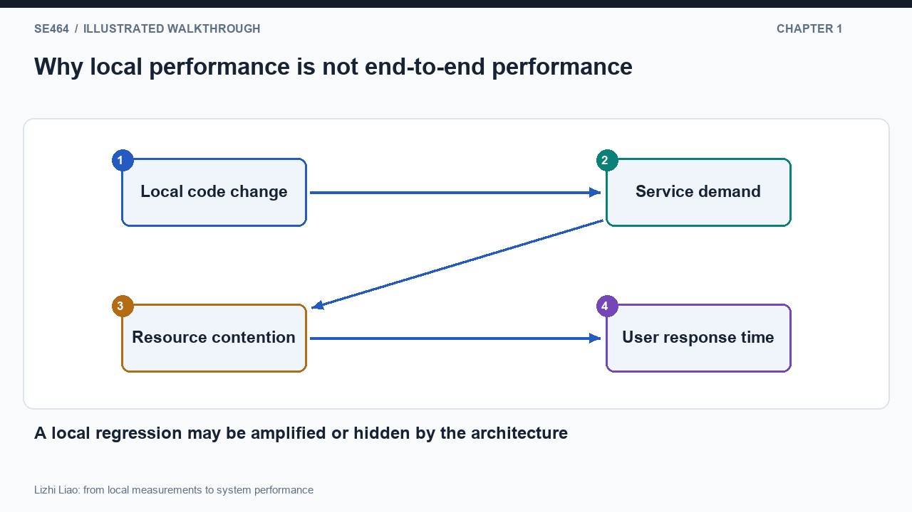
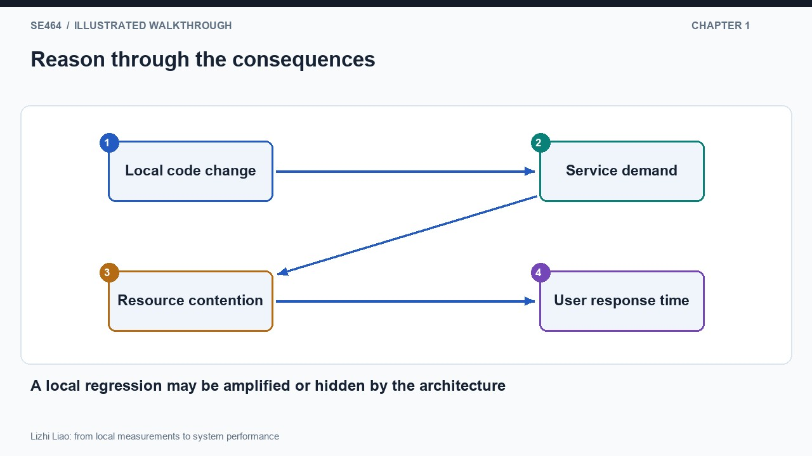
No. Frequency, critical-path position, parallel execution, shared resources and workload determine how the change propagates. Measure and model those relationships.
The first step runs small-scale tests on original and changed code and collects local performance observations. Keep the inputs, environment and measurement boundaries comparable. Repetition matters because timing varies with operating-system activity, competing processes, warmup and other effects.
The displayed method compares distributions using a Mann–Whitney U test and Cliff’s delta, then uses the mean difference as a performance-deviation quantity. Statistical evidence and effect size answer different questions; neither should be replaced by a single noisy timing run. The slide illustrates repeated runs, not a universal sample size requirement.
When teaching or applying the method, report the measurement protocol, distributions, effect direction and magnitude, thresholds and uncertainty. A small p-value is not the size of a slowdown, and a local distribution difference does not by itself establish a user-visible regression.
New scenario: an updated serializer is consistently slower in isolated tests, but its inputs are larger than the baseline’s. Correct the comparison before attributing the difference to code. Comparable workload is part of the evidence, not an optional detail.
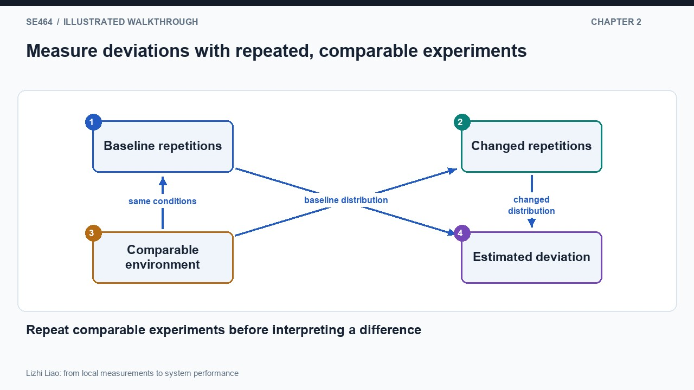
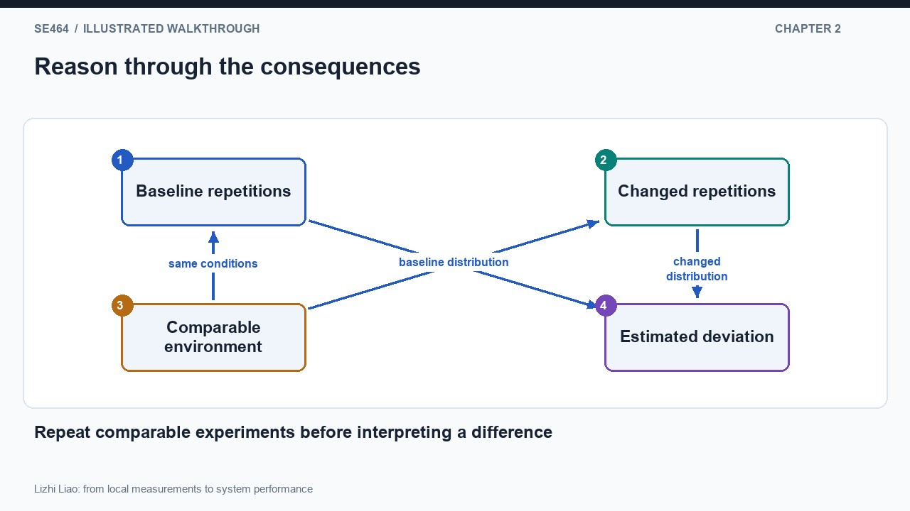
False. Consider effect size, measurement conditions, the modeled execution path and workload, and the relevant user requirement.
The next step maps local deviations to the higher-level modeled activities. The lecture illustrates structural matching using maximum common subgraph analysis, followed by propagation up the relevant call structure so the affected architectural service-demand parameters can be updated.
A mapping must preserve the meaning and units of the measurement. A function’s elapsed time may include waiting or downstream calls; it is not automatically an independent CPU service demand. Record call frequency and nesting so the same cost is not counted once in a parent measurement and again in its child.
Keep original and updated model versions. Change parameters supported by the local evidence and preserve other assumptions unless the code or architecture changed them. Then evaluate both models under relevant workloads and compare the resulting performance distributions.
The approach is useful for prioritizing costly system tests, but a model is only as credible as its structure, mapping, parameters and workload. Validate the baseline and use independent measurements to check predictions. The experimental results shown for TeaStore and TrainTicket are evidence for those studied cases, not a universal no-false-alarm guarantee.
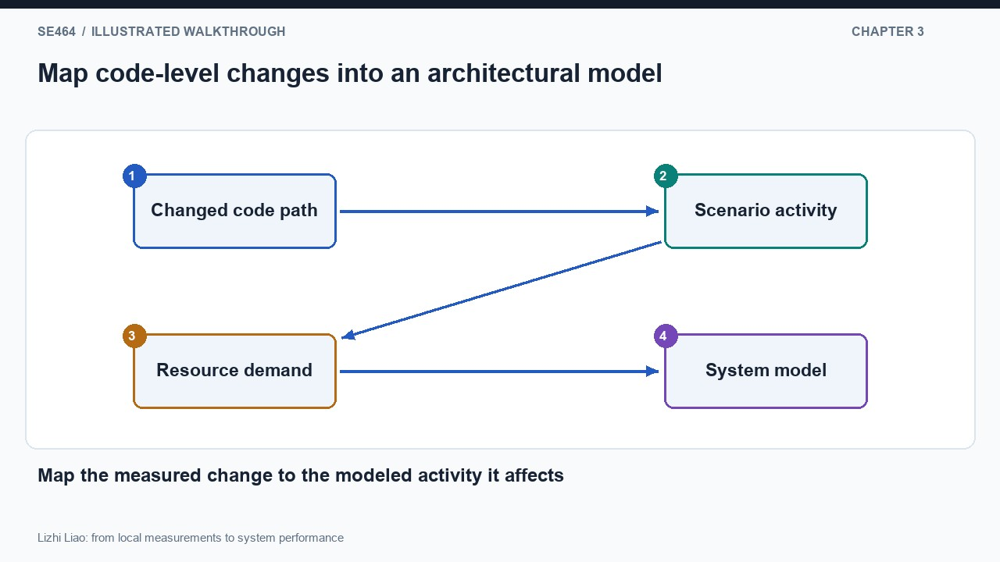
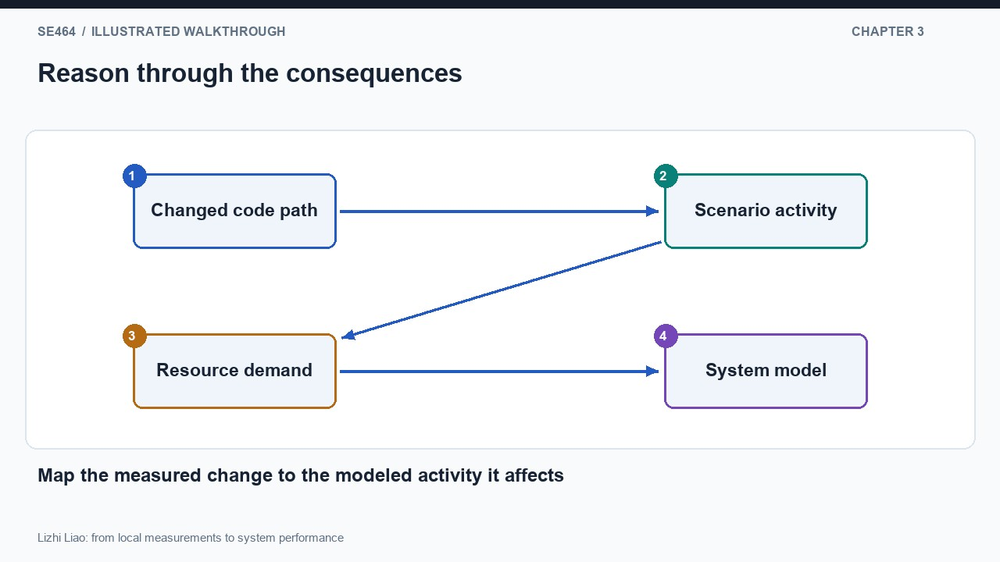
Not safely. The parent may already include the child’s time or waiting. Establish measurement boundaries, call counts, resource meaning and a mapping that avoids double counting.
The demonstration uses QPME, the Queueing Petri Net Modeling Environment. Request paths move through modeled activities and transitions. Queues provide resource contention, while the model can represent different request classes and routing through the system.
An important clarification in the recording is that each visible green place is not necessarily an independent hardware resource. Several places can reference the same underlying queue. In the demonstrated naming scheme, the prefix identifies the resource queue. Different request paths can therefore compete for the same web or authentication resource.
For each shared queue, inspect scheduling discipline, number of servers and service-time assumptions. For each request class, inspect routing, visits and synchronization. Counting diagram nodes as independent servers would understate contention and produce misleading predictions.
Follow one request from entry to completion. For an add-to-cart operation, identify which modeled activities use the same resource and which downstream work the caller waits for. Write a small activity-to-resource table before changing the model. The point is to understand the semantics behind the diagram, not memorize its colors.
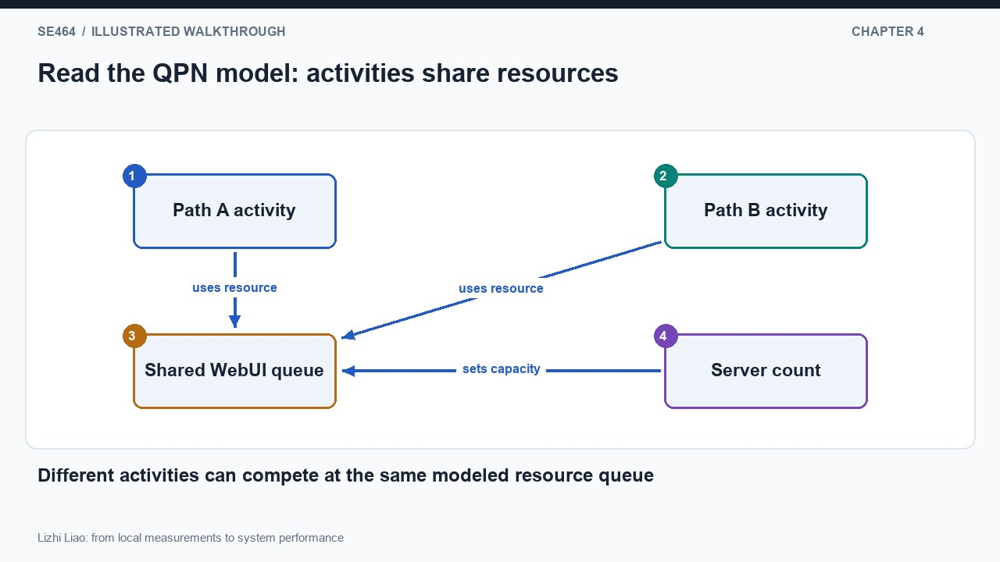
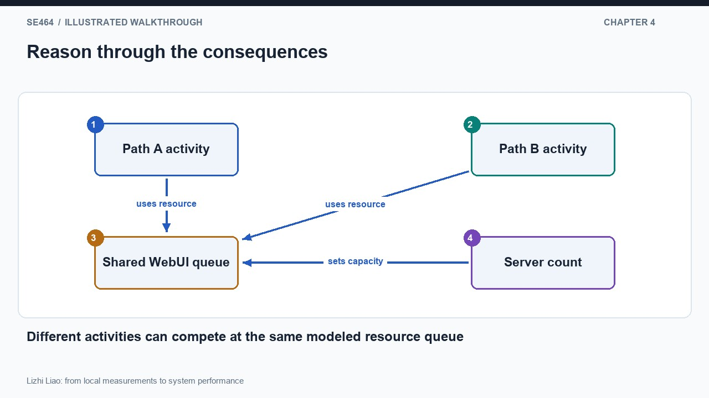
No. They share the modeled queue’s capacity unless the model explicitly assigns separate resources. Distinct places can compete at one resource.
The demo first adds capacity to a highly utilized web resource, then explores moving work into a separate cart service with asynchronous interaction. These are different changes: adding a server changes resource capacity; changing the interaction can change the user’s waiting path and where work contends.
Inspect throughput, utilization, population and residence time as well as end-to-end response. A substantial response-time improvement can occur near saturation even when utilization changes more modestly. Conversely, a quick acknowledgment may leave substantial background work running.
Preserve completion semantics when comparing synchronous and asynchronous designs. Does the response mean the cart update is durable, accepted for later processing, or fully completed? A shorter response is not equivalent behavior if the user-visible contract changed. Also model retries, ordering, failures and backpressure where they matter.
Distinguish uncertainty in a simulation estimate from a latency percentile. A 95% confidence interval for a mean is not p95 request latency. The recording shows simulation output; interpret the reported statistic according to its definition, and avoid transferring its example numbers to a real deployment.
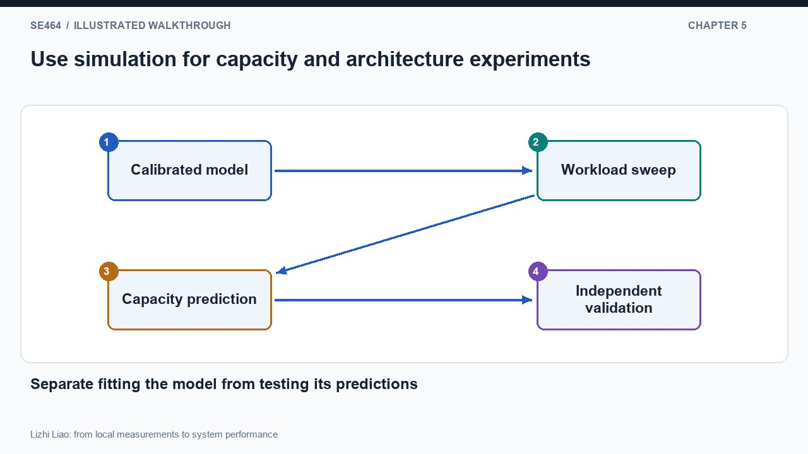
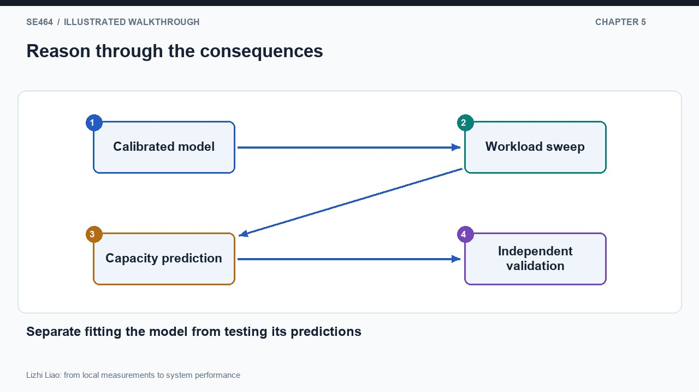
No. The work may continue elsewhere, with similar utilization or new contention. Compare the same completion semantics and inspect downstream capacity and failure behavior.
The interactive lab is a deliberately smaller model than the lecture’s QPN demonstration. It assumes one M/M/1 queue: Poisson arrivals, independent exponential service times, one server, an unbounded queue and steady state. With service demand S seconds and arrival rate λ per second, utilization is ρ = λS and mean response is R = S/(1−ρ), only when ρ < 1.
New worked example: λ = 75 requests/second and S = 8 ms gives ρ = 0.60 and R = 20 ms. Increasing S to 10 ms gives ρ = 0.75 and R = 40 ms. A 25% increase in local demand doubles the model’s mean response. At λS ≥ 1 the model has no finite steady-state mean; reporting a negative response from the formula would be an error.
Use this calculation to explain amplification, not to claim every request follows an exponential distribution. A real model may need multiple resources, several visits, parallel branches, finite queues and distinct workload classes. Revalidate after an architectural change.
A reviewable analysis records the baseline measurements, local change, mapping, model assumptions, workload, prediction and validation error. Keep calibration evidence separate from validation evidence. Recommend a measurement or experiment that would most reduce uncertainty in the decision.
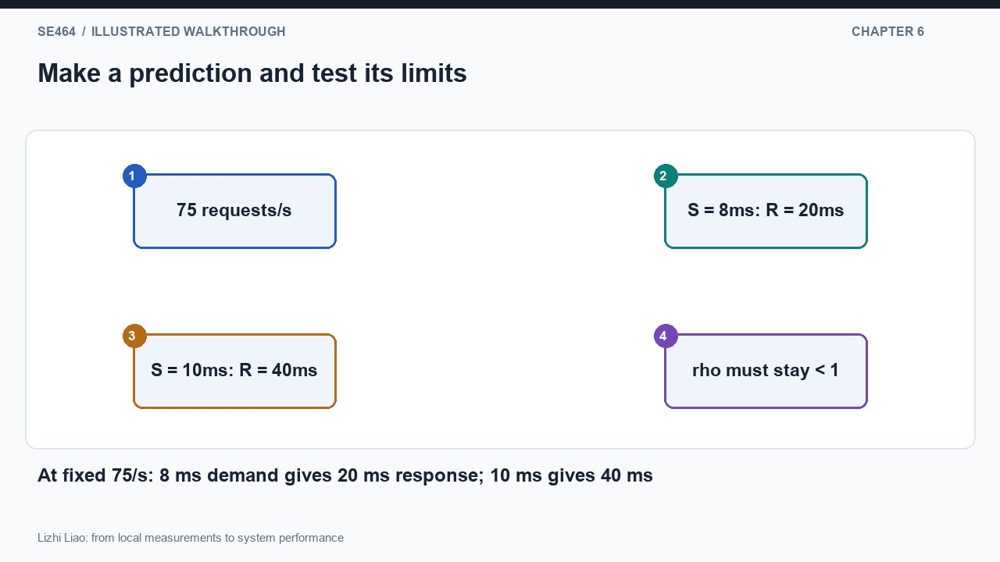
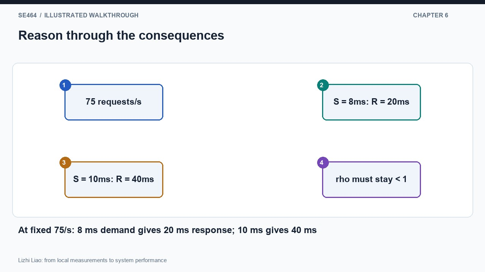
Arrivals consume all or more of the service capacity. The assumed queue has no stable finite mean response; the algebra is not a valid continuation beyond the stability condition.
Local tests expose fine-grained changes early; a system model represents paths, workloads and shared resources that determine end-to-end impact.
A place represents part of the modeled execution; multiple places can use a shared underlying queue and compete for its capacity. Inspect mappings rather than counting visible nodes as servers.
It may measure acceptance rather than completion. Work, contention and failure handling remain, so compare equivalent semantics and inspect background throughput and delay.
Plan a regression investigation for a campus search-and-export service. Identify local tests, a request-to-resource mapping, two workload mixes, an original and changed model, and an independent validation experiment. Explain what your model can and cannot predict.
Use repeatable comparable measurements, statistical and effect-size evidence, justified service-demand updates and explicit resource sharing. Compare equivalent completion semantics under stated workloads, record uncertainty, and check predictions against independent system observations. Avoid double counting and treating model output as measured production truth.
Questions-only worksheet · Worked answer sheet
A repeatedly measured unit-level operation becomes 20% slower after a patch. What is the most defensible next step?
Best answer: C.
Map the changed demand into a validated system model and assess representative workloads, then check predictions against system measurements.
A local change can be amplified near saturation, hidden off the critical path, or offset elsewhere. Functional success and a local slowdown alone do not determine end-to-end impact.
In a single-server M/M/1 teaching model, arrival rate is 80 requests/s. Mean service demand changes from 8 ms to 10 ms. Calculate utilization and mean response time before and after. State why this is not a forecast for every production workload.
Before: ρ = 0.64 and R = 0.008/0.36 ≈ 22.22 ms. After: ρ = 0.80 and R = 0.010/0.20 = 50 ms. Service demand rises 25%, but predicted response rises 125%.
The nonlinear queueing effect depends on the stated Poisson arrivals, exponential independent service, single server, unbounded queue and steady-state assumptions. A real multi-resource system needs an appropriate model and validation.
A teammate runs one baseline test and one updated test on different machines, then changes every service demand in a simulation until its output matches the update. Redesign this study so its conclusion is reviewable.
Use comparable controlled environments and workloads, repeat measurements, and report distributions with statistical and practical effect evidence. Map affected code to modeled activities and update only justified parameters. Calibrate with baseline evidence, reserve independent measurements or workloads for validation, and report prediction error, variability and model limitations.
Fitting the model to the same result later called a validation target can conceal a poor causal model. Statistical significance alone is not a measure of user impact.